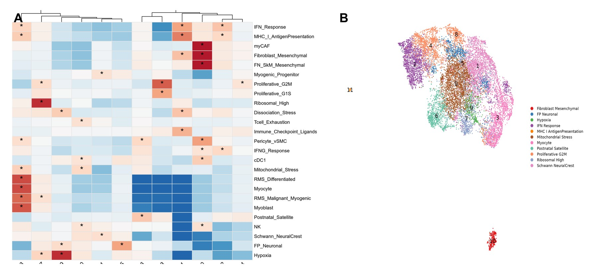

Syed Abbas Bukhari, SigClust repository. Repository README declares MIT. Image resized and compressed. Source and license.
The analytical problem
Continuous signature scores are useful, but a high score alone does not explain whether a biological program is concentrated within a cluster. SigClust adds an explicit statistical association step between supplied signatures and pre-existing clusters.
My contribution
I developed the workflow to accept an already clustered Seurat object and per-cell signature scores, evaluate signature–cluster enrichment, and return consistent annotations, visualizations, and machine-readable evidence.
How the workflow works
For each retained signature, percentile-based high-scoring cells are tested for over-representation in each cluster using a one-sided Fisher test. Odds ratios describe effect size and Benjamini–Hochberg correction addresses multiple testing. The full multi-signature profile is retained alongside a dominant supported annotation.
Outputs and integration
Outputs include an enrichment table, cluster-annotation table, parameter summaries, enrichment heatmaps, and a functional UMAP. Scores can be supplied from UCell, AUCell, AddModuleScore, or another compatible scoring procedure. The workflow supports interactive R use and command-line execution.
Scope and interpretation
SigClust does not cluster cells, deconvolve bulk mixtures, transfer labels from a reference, or discover new cell types. Results depend on the supplied signatures, score thresholds, and upstream clustering. Statistical enrichment supports annotation; it does not independently establish biological identity or clinical validity.
Why this tool matters
It makes annotation decisions explicit and auditable. This reflects my broader software approach: preserve evidence, expose assumptions, and produce outputs that collaborators can inspect and reuse.